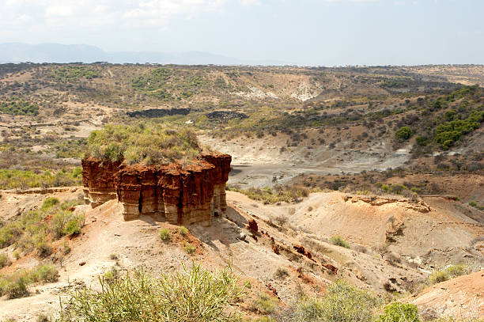
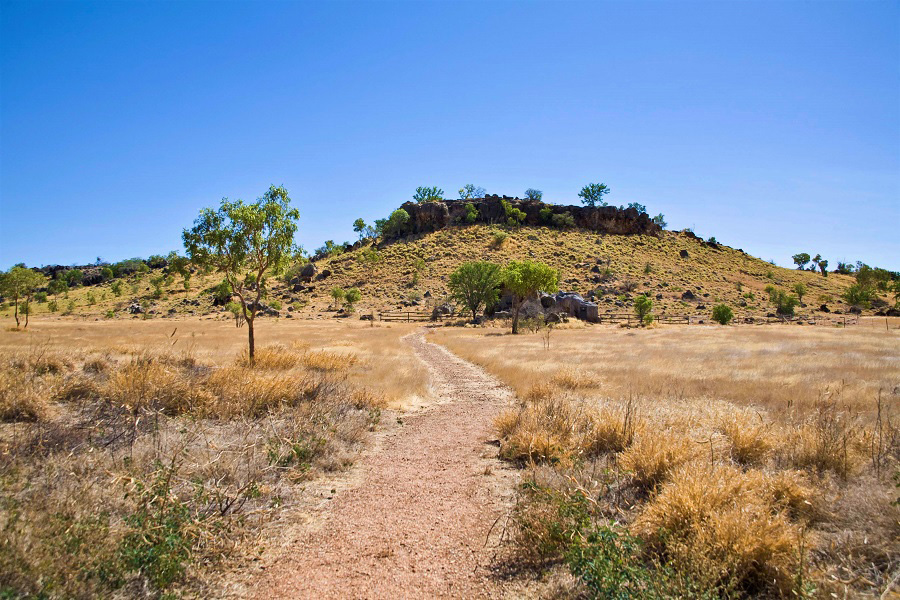
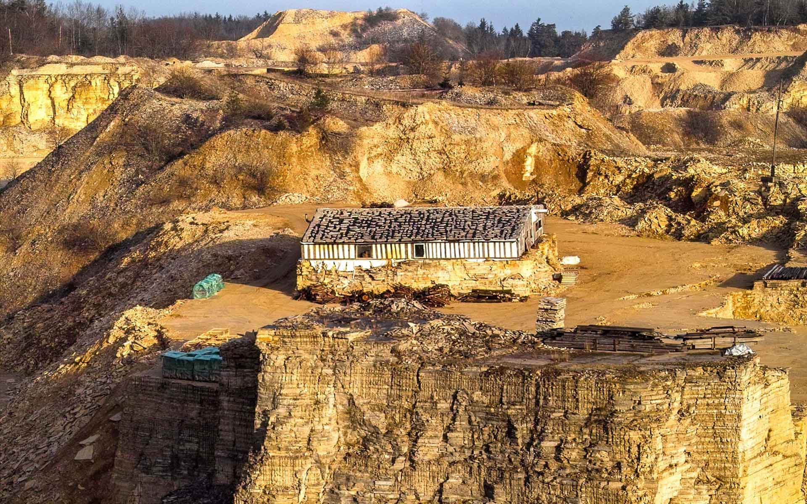
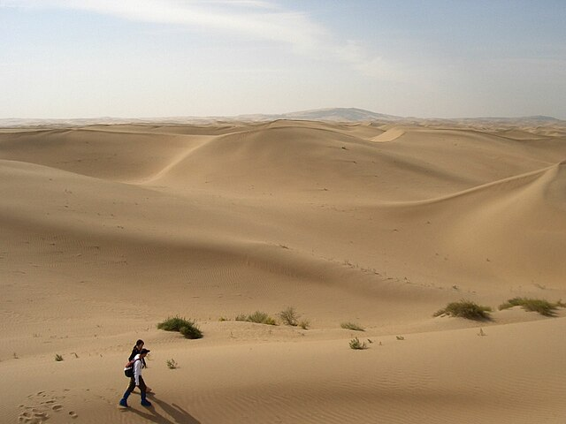
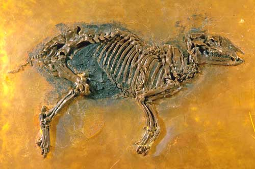

Inicialmente, a rocha original chamada de prótolito é designada por altas pressões e temperaturas abaixo da superfície terrestre, onde a partir do metamorfismo de minerais e rochas já existentes
(ígneas, sedimentares e metamórficas), a rocha original sofre mudanças de textura, cristalização e alteração física e química, transformando-a em um novo tipo de rocha (Rocha Metamórficas).
Essa ação geralmente ocorre a partir do movimento de placas tectônicas ou fortes colisões de regiões, resultando no processo de formação desta rocha. Entretanto, qualquer tipo de fóssil presente
neste solo, encontra-se destruído pela pressão e mudanças geológicas (exemplo de rocha metamórfica: Granito).

Com o aumento da quantidade de sedimentos de rochas, minerais, esqueletos e matéria orgânica, esse acumulo é soterrado em camadas abaixo do solo, onde em uma escala de milhares de anos, esses
materiais sofrem o processo de litificação, transformando os sedimentos restantes em uma única rocha (Rocha Sedimentar). Quando a rocha é composta apenas de outros fragmentos de rochas, são nomeadas
de clásticas, porém quando o processo ocorre devido a precipitação de solutos em ambientes com água, resultando em rochas como estalactite e estalagmite, torna-se um processo químico. Quando ocorre
a sedimentação de grande quantidade de matéria biológica ou orgânica soterrada, a fossilização deste material ocorre com maior preservação, registrando a impressão do fóssil na rocha.

Situado em regiões do Ártico e Sibéria, o Permafrost é composto de "gelo, neve, rochas e sedimentos", sendo uma camada de solo congelado, podendo atingir até 300 metros de profundidade. Durante o
processo de congelamento ao decorrer de milhares de anos, abrigou consigo uma grande quantidade de matéria biológica" incluindo a preservação de animais mortos da Era do Gelo (filhotes de mamutes
e leões das cavernas foram encontrados neste solo) diferente do processo em rochas sedimentares, o tecido mole é preservado, podendo encontrar o corpo do animal em ótimo estado de preservação.
Entretanto, a liberação constante dessas ramificações do Permafrost gera um risco considerável, devido a liberação de "metano e dióxido de carbono" na atmosfera.


Lyme Regis
É uma cidade a beira mar, com praias exuberantes e vilas vitorianas, localizada no oeste de Dorset, Inglaterra.
Apesar de ser um ótimo ponto turístico, o que chama sua atenção é a riqueza mineral e fóssil presente em seu solo, sendo o
local onde foi descoberto o primeiro fóssil de ictiossauro, fora a descoberta de 10.000 fósseis encontrados na região, sendo
reconhecida como Patrimônio da Humanidade pela UNESCO.

O Vale da Lua
Intitulado como um sítio geológico, próximo de La Paz, na Bolívia. O Local apresenta uma vasta região compostas de rochas sedimentares de grande variedade, incluindo rochas de argila
e arenito, formação essa, moldado ao decorrer de milhares de anos pela erosão e deposição de sedimentos. Sendo um ponto turístico, apresenta fascinantes estruturas geológicas, tornando-se um local de estudo
para entendimento do tempo geológico neste ambiente.

Olduvai
Localizado no norte da Tanzânia, África. Situado em um desfiladeiro formado devido a ação da crosta tectônica, proporcionou em milhares de anos a acumulação de sedimentos e a formação de lagos, rios e pântanos.
Preservando fósseis de suma importância, pertencentes de mamíferos pré-históricos e do hominídeo Homo habilis datados dentre 1,75 milhões de anos. Além de ser uma janela ao passado, o local é visto como um dos berços da humanidade.

Riversleigh
Sítio Arqueológico, situado na região de Queensland, Australia. Proporciona uma vasta coleção de fósseis do Oligoceno ao Mioceno da Megafauna australiana. Entre 35 milhões de anos após a separação da Antártida, o continente australiano
esteve separado aos demais continentes, resultando em uma rica biodiversidade pré-histórica durante sua escala de tempo, com este fato, é possível estudar essa região para encontrar pistas deste passado.

Rancho La Brea
Apesar de Los Angeles ser um ponto de referência para estrelas de Hollyood, também possui um acervo muito importante para a paleontologia da América do Norte e Sul, localizado no sítio arqueológico em Hancock Park, no centro de Los Angeles.
Sua região é composta por reservas de piche (substância resinosa, de cor negra e muito pegajosa), onde fosseis da megafauna américa são encontrados, como: Mastodontes, Preguiças-Gigantes, Tigres-Dente-de-Sabre, etc.

Solnhofen
Imagine um local semelhantes a região das Bahamas, dividida por um arquipélago de recifes, entretanto, está presente no território Alemão durante o Jurássico Superior. Atualmente, este sítio está localizado no distrito de Weißenburg-Gunzenhausen,
no estado da Baviera, Alemanha, onde seu solo exibe pistas sobre este período Geológico. Diversos fosseis de repteis marinhos como: Eurysternum, Pleurosaurus e até aves primitivas como: Archaeopteryx foram encontrados. Este local não só abriga uma
vasta diversidade de fosseis, mas também nos apresenta as possíveis relações ecológicas neste período da terra onde a dinastia dos dinossauros reinava em terra, agua e ar.

Penhascos Flamejantes
Apelidado por este título, trata-se do Deserto de Gobi, localizado no norte da China e no sul da Mongólia, sendo o 4° maior deserto do mundo, possuindo um clima seco e com pouca vegetação. Contendo uma vasta extensão, há milhares de anos foi
habitado por repteis, mamíferos e sobretudo dinossauros, podemos sugerir que o clima do deserto mudou muito até os dias de hoje, comparado a milhares de anos atrás. Hoje podemos encontrar fosseis de gigantes terópodes e pegadas nesta região revelando-se
dentre a erosão do solo.

Messel
Declarado como Patrimônio da Humanidade pela UNESCO, inicialmente Messel Pit era uma pedreira abandonada, onde apenas se iniciou escavações cientificas em 1970. O sítio fossilífero de Messel está localizado dentre o município de Messel, ao sudeste de
Francoforte do Meno, Alemanha. Esse sítio contém um vasto acervo de fosseis em excelente estado de preservação situados do Eoceno, fora repteis, aves, peixes é possível identificar fosseis de mamíferos que garantem um estudo com maior profundidade referente
as relações ecológicas desses animais e sua evolução. Este local encontra-se sendo um dos mais abundantes em fosseis mais bem preservados do mundo, pois devido aos fatores de sua geologia, preservou inúmeros fosseis com impressões de pelos, penas e pele.